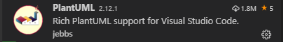

VSCode en PlantUML
Installatie
Download
Visual Studio Code
- kies het juiste besturingssysteem.
Selecteer eventueel volgende opties:
Start Visual studio code. In de linkerkolom kies je voor het onderste icoon
(extensions). Installeer de extentie PlantUML 
Installeer de
graphviz binary
.
Documentatie PlantUML
PlantUML
: online documentatie.
De online
PlantUML-editor
(alternatief voor installatie van VSCode).
Tip
: Geen icons gebruiken met:
skinparam classAttributeIconSize 0